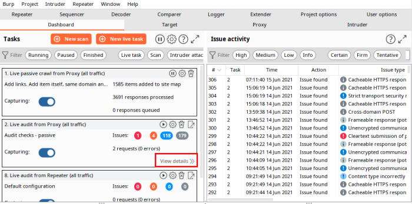

Results
•
All the Issues found during proxying activity
:
Dashboard → Issue Activity
•
Specific Target Issues:
◇ Dashboard → Tasks → View Details

▪ Audit Items
▪ Issue Activity
◇ Target → Site map → Issues